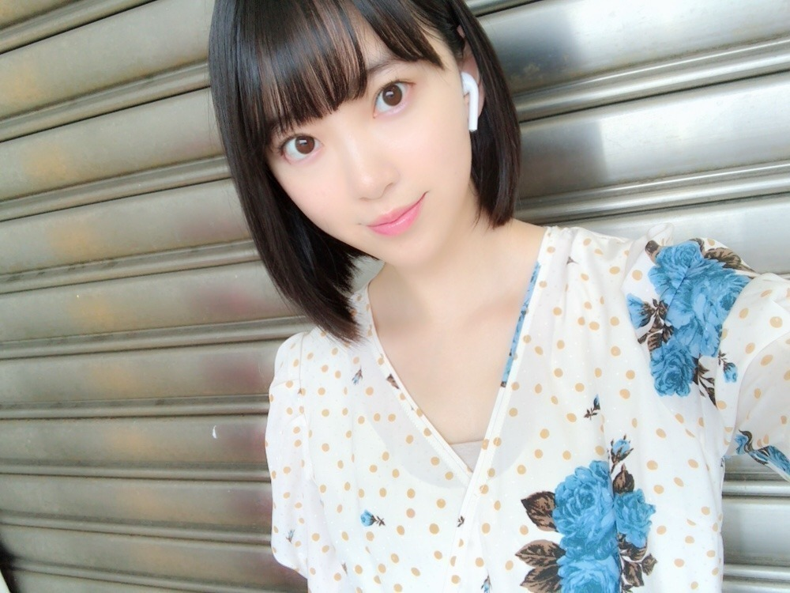
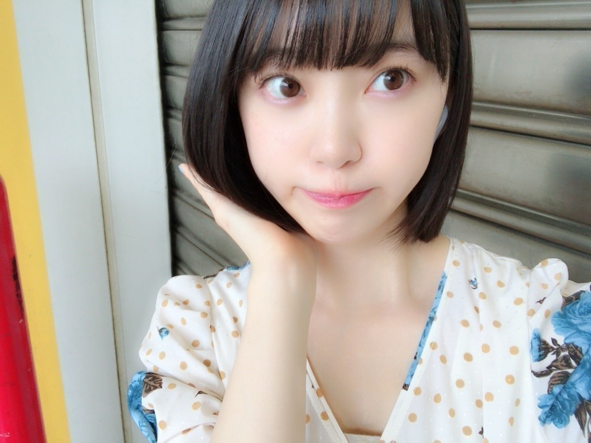
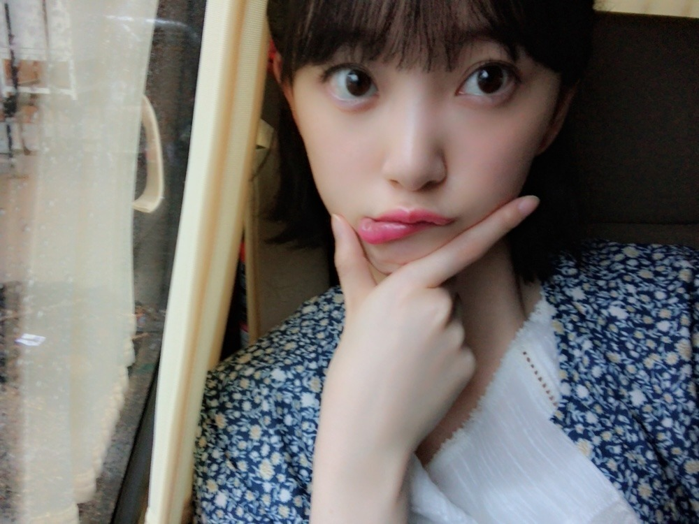

2018/0626Tue西瓜の渦
久しぶりの
ショートボブ！
後ろからボブの部分を
手でワサワサされます。笑
今のところ
真夏さんと葉月にされた(>_>)笑
したくなるシルエットなのかな？


毛先はぱっつん重めに
やや前下がりに切るのが
ボブ未央奈流です。

1つ終わって
髪もばっさりと。
軽やかなさわやかな気持ちです。
お仕事でとある所に来ています
凄く楽しかったなぁ〜
また解禁したら色々話させてください♡
じゃ、ぶーんっと帰りますか。
そうだ！明日のテレ東音楽祭出ます(>_>)
見てください☺︎
じゃね。
2018/06/26 14:12
コメント(459)
ボブ、ショートの女性好き！
今日まるでぶ総本店いってきた〜！！
美味しかったよ
美味しかったよ
こんにちは、未央奈さん
ほんと可愛いなぁ…
ショートヘアの写真がアップされると果たして
今の写真か昔の写真か記憶をさかのぼったり、、
同じように先日までのセミロング時代を懐かしく
思う日が来ることもあるだろうな
あの頃は…とセンチメンタルになったりするのも
ヘアスタイルの魅力かもしれない
自分もワサワサ仲間に入れてもらいたい。笑
さて置き神宮公演も近いしかなり忙しいようだけど
蒸し暑くなったし体調には気をつけてね
夜のテレ東音楽祭で新しい未央奈さんが見られる
楽しみにTV前で待機してます！
こんにちはー♪
ボブ未央奈 定着してきたね、
てっぱんでカワイイー！！
情報解禁したらまたいろいろ聞かせてね。。
そだ、次のシングルの個握 京都当たったよ！
未央奈に会えるの楽しみー！！
ボブ未央奈 定着してきたね、
てっぱんでカワイイー！！
情報解禁したらまたいろいろ聞かせてね。。
そだ、次のシングルの個握 京都当たったよ！
未央奈に会えるの楽しみー！！
最近なんだかんだで寝不足の私ですが、未央奈の美しさに目も心も潤いました。はぁーきっくー！
未央奈ちゃん、ひろっしーです！コメント投稿461回目です！
前回はブログの感想を書きました！
時間→「No.394 2018年6月27日 11:14」
今回は前回の訂正をさせて頂きます！
えぇ～、イヤホンはワイヤレスでした(恥)
僕は今までどちらも線が無いって認識でしたがネットで違いを検索したら明確な違いがあり、
充電や電池の内蔵機能によって「電気」を常に供給するための線が必要なくなったもの
→コードレス
無線によってデータをおくるための「通信」線が必要なくなったもの
→ワイヤレス
だそうです！あれっ、僕が知らんだだけ？(笑)
では今日の「テレ東音楽祭」と「レコメン！」久々のホーリーナイト楽しみおな～！
ここまで読んで頂きありがとうございました！
毎日お仕事お疲れ様です！体調にはくれぐれも気を付けて頑張ってくださいね！
ではでは！
前回はブログの感想を書きました！
時間→「No.394 2018年6月27日 11:14」
今回は前回の訂正をさせて頂きます！
えぇ～、イヤホンはワイヤレスでした(恥)
僕は今までどちらも線が無いって認識でしたがネットで違いを検索したら明確な違いがあり、
充電や電池の内蔵機能によって「電気」を常に供給するための線が必要なくなったもの
→コードレス
無線によってデータをおくるための「通信」線が必要なくなったもの
→ワイヤレス
だそうです！あれっ、僕が知らんだだけ？(笑)
では今日の「テレ東音楽祭」と「レコメン！」久々のホーリーナイト楽しみおな～！
ここまで読んで頂きありがとうございました！
毎日お仕事お疲れ様です！体調にはくれぐれも気を付けて頑張ってくださいね！
ではでは！
ブログありがとう
テレ東音楽祭の録画もありがとう！危うく録画し忘れるところだった…
ボブかわいいね❤️
体調はどう？堀ちゃんポジティブでアクティブだけど、疲れたらちゃんと休むんだよ！
あ、21thの個握いっぱい当たったから楽しみにしています！
テレ東音楽祭の録画もありがとう！危うく録画し忘れるところだった…
ボブかわいいね❤️
体調はどう？堀ちゃんポジティブでアクティブだけど、疲れたらちゃんと休むんだよ！
あ、21thの個握いっぱい当たったから楽しみにしています！
ボブみおちゃんんん。
この前握手の時、ボブの話できんかった…
ショートでもロングでも、全部好きやお(照)
テレ東音楽楽しんでね♪
レコメン楽しみに仕事頑張りまっす！
この前握手の時、ボブの話できんかった…
ショートでもロングでも、全部好きやお(照)
テレ東音楽楽しんでね♪
レコメン楽しみに仕事頑張りまっす！
てかてか、
こんばんはです❤️
わたしも今日は用事が終わって
今から帰ります❤️
テレ東見ますね❤️
てか、
最近…………………
いや、
以前から…………………
いや、
ますます…………………
くじ運ないわたしは……
ライブや舞台、握手会など、
なかなか当たらない…………………
なかなか休めない…………………
なかなか行けない…………………
なかなか見れない…………………
はぁ〜
＼（−＿−；）
なかなかシリーズのわたし……
このシリーズがなかなか手強い⁉️
いくらガンバっても
なかなか変わらないけど……
Ｖ（＾_＾）Ｖ
今日は違います❤️
今日はテレビの前です❤️
今日は夕方から夜まで応援します❤️
だで、
ガンバりゃあよ❤️
(^O^)／
☆☆☆☆☆☆☆☆☆☆☆☆☆☆
( サイリュウムを振るわたし…… )
てかてか、
準備、準備……
ね❤️
。
こんばんはです❤️
わたしも今日は用事が終わって
今から帰ります❤️
テレ東見ますね❤️
てか、
最近…………………
いや、
以前から…………………
いや、
ますます…………………
くじ運ないわたしは……
ライブや舞台、握手会など、
なかなか当たらない…………………
なかなか休めない…………………
なかなか行けない…………………
なかなか見れない…………………
はぁ〜
＼（−＿−；）
なかなかシリーズのわたし……
このシリーズがなかなか手強い⁉️
いくらガンバっても
なかなか変わらないけど……
Ｖ（＾_＾）Ｖ
今日は違います❤️
今日はテレビの前です❤️
今日は夕方から夜まで応援します❤️
だで、
ガンバりゃあよ❤️
(^O^)／
☆☆☆☆☆☆☆☆☆☆☆☆☆☆
( サイリュウムを振るわたし…… )
てかてか、
準備、準備……
ね❤️
。
未央奈ちゃんブログ更新ありがとうございます。
ショートボブも似合ってますね。かわいい！笑
お仕事でどんな所に行ったのかな？
解禁されるの楽しみに待ってます！
神宮LIVE行きます！初めて会場に入れるのですごく楽しみにしてます！
あとテレ東音楽祭も観ます！
これからも応援しているので頑張ってください！！！
ショートボブも似合ってますね。かわいい！笑
お仕事でどんな所に行ったのかな？
解禁されるの楽しみに待ってます！
神宮LIVE行きます！初めて会場に入れるのですごく楽しみにしてます！
あとテレ東音楽祭も観ます！
これからも応援しているので頑張ってください！！！
未央奈のボブが一番好き‼
みおな


更新をありがとう！
めっちゃ可愛いと思う
堀様、いつも頑張ってね～！
大好き
めっちゃ可愛いと思う
堀様、いつも頑張ってね～！
大好き
お仕事お疲れ様でございます
好かれてる証拠ですね^ ^
ボブも素敵なのですが
お洋服とネイルがまっちしてて素敵です!
写真のピースは今回こんな感じなんですね^ ^
髪型変えると何故だか心リフレッシュした気分になりますね
TVにお話楽しみにしています
乃木撮届いたのでゆっくり見させて頂きますね^ ^
好かれてる証拠ですね^ ^
ボブも素敵なのですが
お洋服とネイルがまっちしてて素敵です!
写真のピースは今回こんな感じなんですね^ ^
髪型変えると何故だか心リフレッシュした気分になりますね
TVにお話楽しみにしています
乃木撮届いたのでゆっくり見させて頂きますね^ ^
未央奈！解禁たのしみにしてるね(´ ˘ `∗)
未央奈ってお仕事がんばってるなってすごい思う！私も見習って頑張る！笑
未央奈ってお仕事がんばってるなってすごい思う！私も見習って頑張る！笑
ボブ未央奈、やっぱり可愛いです♪
今はテレ東音楽祭の真っ最中ですよね！
こちらはテレ東系列局がないので観られないのが、残念無念です☆
今はテレ東音楽祭の真っ最中ですよね！
こちらはテレ東系列局がないので観られないのが、残念無念です☆
天使ですか？
テレ東音楽祭見ます！
ブログ更新ありがとう(≧▽≦)髪型良き(≧▽≦)テレ東音楽祭見たよ～素晴らしかったです(≧▽≦)
やっぱりボブめっちゃ似合ってるー！
テレ東音楽祭も可愛すぎた♡
テレ東音楽祭も可愛すぎた♡
未央奈ちゃんは可愛いです。
今ね、テレ東音楽祭録画しているから、時間作って後でゆっくりと見ようかな。
みおたん、お疲れ様です！
テレ東音楽祭、みおたんのウィンクに、
ノックアウト！
最高&最強ウィンクでした！
そして、あーちゃんとのツーショット、
最高でした！
みおたんの笑顔一杯見れて幸せです！
それでは健康第一で！
信州のミッキイでした！
テレ東音楽祭、みおたんのウィンクに、
ノックアウト！
最高&最強ウィンクでした！
そして、あーちゃんとのツーショット、
最高でした！
みおたんの笑顔一杯見れて幸せです！
それでは健康第一で！
信州のミッキイでした！
みおなブログ更新ありがとう‼︎
ショートボブのみおなめっちゃ好きです！
この前の握手会体調不良で休んでたけど大丈夫でしたか？
元気そうで嬉しいです！振替3回分行きます！
テレ東音楽祭見たよ〜！
みおなのウィンクかわいすぎ！めちゃめちゃいいパフォーマンスでした！
次のブログ更新楽しみにしてます！
ショートボブのみおなめっちゃ好きです！
この前の握手会体調不良で休んでたけど大丈夫でしたか？
元気そうで嬉しいです！振替3回分行きます！
テレ東音楽祭見たよ〜！
みおなのウィンクかわいすぎ！めちゃめちゃいいパフォーマンスでした！
次のブログ更新楽しみにしてます！
似合ってる！
ぼぶ未央奈天使
いつも元気をありがとう！
いつも元気をありがとう！
ブログいつもありがとう！
ボブ未央奈の画像たくさんありがとう。
可愛くてすごい癒されました笑
未央奈のショートボブ大好きです！
仕事の内容も解禁したら、いろいろ聞きたいです。
また暑くなってきましたので、お体には気をつけてくださいね！
同じ岐阜県出身であることをいつも誇りに思っています。
これからも応援させていただきますので、頑張ってくださいね！
ボブ未央奈の画像たくさんありがとう。
可愛くてすごい癒されました笑
未央奈のショートボブ大好きです！
仕事の内容も解禁したら、いろいろ聞きたいです。
また暑くなってきましたので、お体には気をつけてくださいね！
同じ岐阜県出身であることをいつも誇りに思っています。
これからも応援させていただきますので、頑張ってくださいね！
可愛いみおな❤️
テレ東音楽祭見たよ！
逃げ水の時にウインクしたね❤️
流石！
心にズッキュンされたよ〜❤️
めっちゃ可愛かったよ❤️
大好き❤️
帰り気を付けてね♪
テレ東音楽祭見たよ！
逃げ水の時にウインクしたね❤️
流石！
心にズッキュンされたよ〜❤️
めっちゃ可愛かったよ❤️
大好き❤️
帰り気を付けてね♪
みおな～！
かわいすぎ！！
かわいすぎ！！
だめだ最近みおなが好きになってく
ブログ更新してくれてありがとう
めっちゃ似合ってる！
私はボブの未央奈の方が好きやよ
ずっと大好き‼︎
めっちゃ似合ってる！
私はボブの未央奈の方が好きやよ
ずっと大好き‼︎
堀ちゃんこんばんは！
テレ東音楽祭終わりのレコメン！お疲れ様です〜( ´ ▽ ` )
恒例の
ノリさん「ラジオネーム〇〇」
堀ちゃん「〇〇〜」
の復唱が聞けて今日も嬉しかったです！笑
いい話題が思いつかなくて今回もメール送れませんでしたが、次回以降は送っていつかは僕も復唱してもらえるのを夢見てます…！( ´ 〜 ` )
テレ東音楽祭も録画を見ました！
ウインク決まってました！今日の堀ちゃんも可愛かった〜( ´ ▽ ` )
またいろんな番組で堀ちゃん見れるの楽しみにしてます(^^)
ボブ未央奈写真もたくさんあげてくれてありがとうございます！
メンバーにわさわさされる堀ちゃんっていう光景を思い浮かべるだけで和みます( ´ ▽ ` )
また誰かにわさわさかふぁさふぁさかされたらブログででもモバメででも報告待ってます！笑
さて、いよいよ夏って感じになってきましたね！
夏は暑いですが太陽と雰囲気で気分が高揚するのでいいですよね( ´ ▽ ` )
無理は禁物ですが、今年も夏を楽しみましょう！(^^)
それでは、またの更新を楽しみにしてます！
おやすみおなー！
テレ東音楽祭終わりのレコメン！お疲れ様です〜( ´ ▽ ` )
恒例の
ノリさん「ラジオネーム〇〇」
堀ちゃん「〇〇〜」
の復唱が聞けて今日も嬉しかったです！笑
いい話題が思いつかなくて今回もメール送れませんでしたが、次回以降は送っていつかは僕も復唱してもらえるのを夢見てます…！( ´ 〜 ` )
テレ東音楽祭も録画を見ました！
ウインク決まってました！今日の堀ちゃんも可愛かった〜( ´ ▽ ` )
またいろんな番組で堀ちゃん見れるの楽しみにしてます(^^)
ボブ未央奈写真もたくさんあげてくれてありがとうございます！
メンバーにわさわさされる堀ちゃんっていう光景を思い浮かべるだけで和みます( ´ ▽ ` )
また誰かにわさわさかふぁさふぁさかされたらブログででもモバメででも報告待ってます！笑
さて、いよいよ夏って感じになってきましたね！
夏は暑いですが太陽と雰囲気で気分が高揚するのでいいですよね( ´ ▽ ` )
無理は禁物ですが、今年も夏を楽しみましょう！(^^)
それでは、またの更新を楽しみにしてます！
おやすみおなー！
未央奈かわいい
やぁ(・∀・)ノ未央奈ちゃん♡こんばんは！
りょーへー(R.N.イナダウアーびーむ)だよ♪
今日はテレ東音楽祭にレコメン！、お疲れ様！もう時間が遅いので、感想は明日で！
メールたくさん、嬉しいなぁ！久保ちゃんとのエピソード、よきよき～～！ふぁさふぁさ♪
綺麗な景色！夏だねぇ！
#毎日コメント
#今日もお疲れ様
#コメント遅くなったし
#短めになっちゃった
#ごめんね
#明日もがんばらんと
#うむ
#明日も楽しみおな♡
#おやすみおな((￣_｜
りょーへー(R.N.イナダウアーびーむ)だよ♪
今日はテレ東音楽祭にレコメン！、お疲れ様！もう時間が遅いので、感想は明日で！
メールたくさん、嬉しいなぁ！久保ちゃんとのエピソード、よきよき～～！ふぁさふぁさ♪
綺麗な景色！夏だねぇ！
#毎日コメント
#今日もお疲れ様
#コメント遅くなったし
#短めになっちゃった
#ごめんね
#明日もがんばらんと
#うむ
#明日も楽しみおな♡
#おやすみおな((￣_｜
未央奈ちゃん、ひろっしーです！コメント投稿462回目です！
前回は前々回の訂正をさせて頂きました！
時間→「No.407 2018年6月27日 13:07」
「テレ東音楽祭2018」お疲れ様でした！
髪を切られてからの初パフォーマンスは最新曲「シンクロニシティ」でしたね！しかも今年は3曲のメドレーも披露してくださりありがとうございました！「逃げ水」のサビと「裸足でSummer」のBメロではウインクも観られたし大満足でした！バッチリ決まっていましたよ！ボブ未央奈ちゃんの可愛さ半端ないって(笑)
あと、今回の衣装・・・僕の記憶が正しければ「CDTV」年越しライブの時のですよね？
引き続き「レコメン！」お疲れ様でした！
感想は次回書きます！少々お待ちくださいね！
モバメ、今回は3通もありがとうございます！3通目の写真がめっちゃ可愛かったので、即行待受にしました！これでいつでも一緒や～(嬉)いつも最高の癒しをありがとうございます(嬉)久保ちゃんもしてくれたんだ！相思相愛だね！
ここまで読んで頂きありがとうございました！
毎日お仕事お疲れ様です！体調にはくれぐれも気を付けて頑張ってくださいね！
おやすみおな～！
前回は前々回の訂正をさせて頂きました！
時間→「No.407 2018年6月27日 13:07」
「テレ東音楽祭2018」お疲れ様でした！
髪を切られてからの初パフォーマンスは最新曲「シンクロニシティ」でしたね！しかも今年は3曲のメドレーも披露してくださりありがとうございました！「逃げ水」のサビと「裸足でSummer」のBメロではウインクも観られたし大満足でした！バッチリ決まっていましたよ！ボブ未央奈ちゃんの可愛さ半端ないって(笑)
あと、今回の衣装・・・僕の記憶が正しければ「CDTV」年越しライブの時のですよね？
引き続き「レコメン！」お疲れ様でした！
感想は次回書きます！少々お待ちくださいね！
モバメ、今回は3通もありがとうございます！3通目の写真がめっちゃ可愛かったので、即行待受にしました！これでいつでも一緒や～(嬉)いつも最高の癒しをありがとうございます(嬉)久保ちゃんもしてくれたんだ！相思相愛だね！
ここまで読んで頂きありがとうございました！
毎日お仕事お疲れ様です！体調にはくれぐれも気を付けて頑張ってくださいね！
おやすみおな～！
ショートボブ、可愛いね！
みおならしくて一番好き。
レコメン聞いたよ、猛暑はやく
克服できるといいね！
これからもみおならしく頑張ってね。
みおならしくて一番好き。
レコメン聞いたよ、猛暑はやく
克服できるといいね！
これからもみおならしく頑張ってね。
堀ちゃんおつ〜ん
まだおはようの時間だけどね
ボブで後ろワサワサされるって？坊主にするとワシャワシャ年がら年中されるよ？された方はウゾゾ〜てなる
…と言う遠い思い出
まだおはようの時間だけどね
ボブで後ろワサワサされるって？坊主にするとワシャワシャ年がら年中されるよ？された方はウゾゾ〜てなる
…と言う遠い思い出
堀さん、おはようございます♪
西瓜を読めなかったので、調べました。
すいか と読むのですね。
ノットイエット というアイドルの歌に
西瓜ベイベー という曲がありました。
今回のブログの写真は３枚目のが好きです。
堀さんは最近はハンバーガーを食べてますか？
僕はマクドナルドのポテトが１５０円で買える券
があるので明日、ポテトだけ買いに行きます。
堀さんが好きです☆
またコメントしますね☆
西瓜を読めなかったので、調べました。
すいか と読むのですね。
ノットイエット というアイドルの歌に
西瓜ベイベー という曲がありました。
今回のブログの写真は３枚目のが好きです。
堀さんは最近はハンバーガーを食べてますか？
僕はマクドナルドのポテトが１５０円で買える券
があるので明日、ポテトだけ買いに行きます。
堀さんが好きです☆
またコメントしますね☆
ボブ！やっぱり良いですね〜
好きです
テレ東の音楽祭、昨日大学の授業でバタバタしててまだ見れてないのですぐに録画してたの見ますね！！
写真の堀さん、Bluetoothで音楽聴いてたんですか？（笑）
好きです
テレ東の音楽祭、昨日大学の授業でバタバタしててまだ見れてないのですぐに録画してたの見ますね！！
写真の堀さん、Bluetoothで音楽聴いてたんですか？（笑）
おぱよう。セブンやよ(ฅ'ω'ฅ)♪
オレもふぁさふぁさしたいっす♡ 笑
久保ちゃんに近づいたのはふぁさふぁさしたい久保ちゃんへの優しさなのか？ただ未央奈がふぁさふぁさされたかったのか？ 笑
両方かな？(^-^)
レコメン！での服 夏っぽくて良き(^-^)
白と水色似合うよね〜(*´∀｀*)
未央奈のファッションいつも楽しみです✨
では、今日も1日楽しもうd(@^∇ﾟ)/ﾌｧｲﾄｯ♪
o(ﾟ▽＾)ﾉｼまたねぃ♪
オレもふぁさふぁさしたいっす♡ 笑
久保ちゃんに近づいたのはふぁさふぁさしたい久保ちゃんへの優しさなのか？ただ未央奈がふぁさふぁさされたかったのか？ 笑
両方かな？(^-^)
レコメン！での服 夏っぽくて良き(^-^)
白と水色似合うよね〜(*´∀｀*)
未央奈のファッションいつも楽しみです✨
では、今日も1日楽しもうd(@^∇ﾟ)/ﾌｧｲﾄｯ♪
o(ﾟ▽＾)ﾉｼまたねぃ♪
みおなが言ってた恋を知らない僕たちは買ったよ〜〜(･ω<)☆ 少女漫画読みたいなって思ってたから思い切って三巻一気に買っちゃった！私は英二派かな〜〜(笑)
みおなって下まぶたにピンクシャドー入れてるよね？私も最近やってるの！ピンクシャドー入れると優しい表情になるから好き！
summer の未央奈はほんとに女神さまだよー！
テレ東音楽祭良かったよ！！！
いつも応援してます！
いつも応援してます！
みおなめっちゃ似合うしかわいいーー＼(^o^)／
いいね！
耳のやつうどんみたい笑
テレ東音楽祭見忘れた…
秩父宮バスラ初日行くよーー(๑･̑◡･̑๑)
いいね！
耳のやつうどんみたい笑
テレ東音楽祭見忘れた…
秩父宮バスラ初日行くよーー(๑･̑◡･̑๑)
堀ちゃんブログありがとー。
やっぱりボブみおなもいいですね！
やっぱりボブみおなもいいですね！
ブログ更新ありがとう‼
ボブ未央奈半端ないって～
乃木坂のどのメンバーより可愛くなるなるもん～
そんなん出来ひんやん普通～
これからもお仕事頑張ってください。
応援してます‼
ボブ未央奈半端ないって～
乃木坂のどのメンバーより可愛くなるなるもん～
そんなん出来ひんやん普通～
これからもお仕事頑張ってください。
応援してます‼
ボブみおな
今年はボブでいくのかな？
したくなるかわいさなんだと思うよ～
テレ東音楽祭は録画で見ました！
もちろんウインクもしっかり見ましたよー
あんなにメドレーするのは新鮮な感じだったよね！
そういえば勘当梅雨明けしたらしいね！
色々といつもと違う夏になりそうです。
体気を付けてね！
テレ東音楽祭は録画で見ました！
もちろんウインクもしっかり見ましたよー
あんなにメドレーするのは新鮮な感じだったよね！
そういえば勘当梅雨明けしたらしいね！
色々といつもと違う夏になりそうです。
体気を付けてね！


テレ東音楽祭観るね！！楽しみにしてます！！